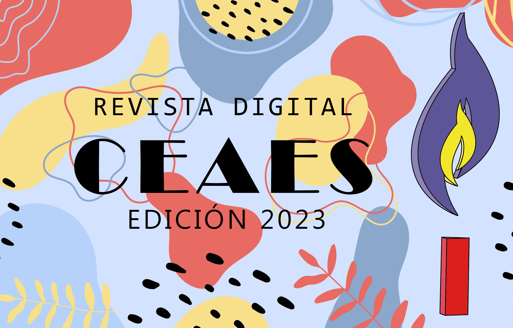
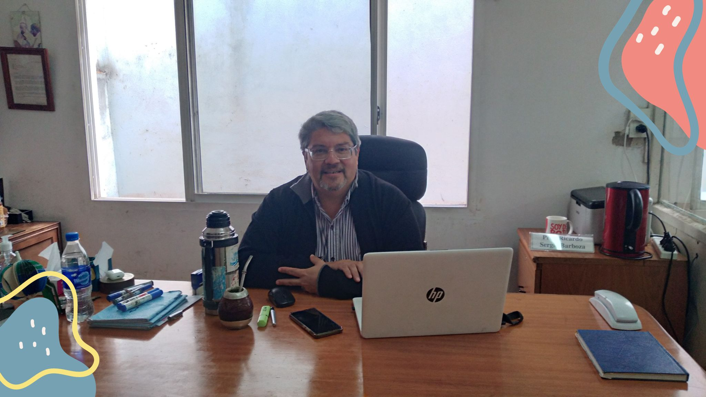

EDITORIAL
“Mucha gente pequeña,
en lugares pequeños,
haciendo cosas pequeñas,
puede cambiar el mundo”
Eduardo Galeano
Están por ingresar a esta Revista Digital de 2023, fruto del trabajo de estudiantes junto a sus docentes,
que en buena medida sintetiza esteaño escolar . Pero a su vez es un muy buen ejemplo de cómo entendemos la Educación en el CEAES,
en nuestro querido ESPI.
Vivimos tiempos desafiantes, dentro de los cuales en nuestra Comunidad Educativa celebramos nuestra diversidad,
nuestra heterogeneidad, nuestro ser distintos, pero avanzando en una carretera común, motivo por el cual ninguna acción deja de influir en el otro.
Es más, intentamos cada uno estar atento, para ayudar, al otro. De esa manera es que las Comunidades se construyen de buen modo.
Desde esta mirada, cada actividad, cada proyecto, cada propuesta de las que encontrarán en esta producción nos pone en contacto con un año transitado.
Está claro que todo lo que hemos vivido sobrepasa lo aquí presentado, pero es una rica muestra de la tarea que día tras día fuimos asumiendo y que de algún modo es infinita.
Eso es lo apasionante de la vida en las escuelas.
Por esa tarea cotidiana es que deseo felicitar a todos y a cada uno. Estudiantes y docentes.
Por esta Revista Digital especiales felicitaciones por el objetivo alcanzado con creces.
Por último, no quiero concluir pasar estas palabras sin referirme a que este año ha sido un tiempo atravesado
por los 40 años desde el Retorno a la Democracia y en el que a su vez hemos ejercido nuestro derecho a votar.
Pensar en la educación es pensar en el presente y en el futuro de nuestro querido País.
Pensar en la educación es pensar en la justicia social, pilar de la convivencia de toda sociedad.
Pensar en la educación es asumir el desafío de que mañana debe ser mejor.
Nuestro país se ha fundado con un objetivo claro, el cual ha quedado plasmado en el Preámbulo de la Constitución Nacional,
en esta oración laica que no debemos perder de vista: El desafío es “constituir la unión nacional, afianzar la justicia, consolidar la paz interior,
proveer a la defensa común, promover el bienestar general, y asegurar los beneficios de la libertad, para nosotros, para nuestra posteridad,
y para todos los hombres del mundo que quieran habitar en el suelo argentino: invocando la protección de Dios, fuente de toda razón y justicia”
Que ese buen Dios, quien para nosotros es Jesús quien pasa para uno de tantos, nos bendiga en este final de 2023 y en el 2024 en el que volveremos a encontrarnos.
Ricardo
PROYECTOS DE PRODUCCION 2023
ALUMNOS PARTICIPANTES
- ALVAREZ, JULIETA NAHIR
- BUCETA, MARIA AGOSTINA
- DIANA, JULIA VICTORIA
- FERREIRA, LUANA ARAMI
- GONZALEZ MEDRANO, CANDELA LUCÍA
- LANZILOTTA, TOMÁS
- NISNIEVICH LUDUEÑA, CATARINA
- NUÑEZ, SOFIA ARIANNA
- OTERO, GASPAR LIHUEN
- PAGANO, ABRIL
- PELUSO, AZUL
- PEÑA GONZALEZ, CHIARA INES
- PEREIRA MONRROY, MANUEL FRANCO
- PEREYRA ARANDIA, SANTIAGO
- PEREZ CARNEBELLA, SOFIA MORENA
- REYES FRETES, ANALIA
- RODRIGUEZ VEGAS, SAMUEL ADRIAN
- ROSSO, SANTIAGO ANDRES
- SARDAR, VALENTIN
- VALLARINO, VICTORIA CAMILA
- VARANO, CATALINA
- VARANO, LOLA
- Hacemos mención especial a la profesora FLORENCIA BAZZINI por su colaboración en la revista.